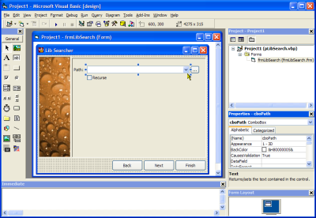

VB5 IDE Manifest (452)
VB5 IDE Manifest (452)
 VB6 IDE Manifest (456)
VB6 IDE Manifest (456)
 5 Apr 2003
5 Apr 2003
Added note that the Palette tab of the colour picker in the properties window stops working when the IDE has a Manifest applied.
 Adding XP Visual Styles to Your Visual Basic Application
Adding XP Visual Styles to Your Visual Basic Application

Making VB Apply XP Visual Styles at Design and Debug Time
If you want to use XP Visual Styles in a VB application, the fact that the controls don't draw using the new styles at design- or debug-time can be a problem, as your form looks different when once you've compiled. Luckily you can persuade both VB5 and VB6 IDEs to use XP Visual Styles too.
The way to do this is to use provide a manifest file telling the OS it should link the VB IDE executable to version 6.0 of the ComCtl32.DLL as described in Using XP Visual Styles. So for VB6 you add a manifest to the path containing VB6.EXE (by default this is C:\Program Files\Microsoft Visual Studio\VB98\VB6.EXE) named VB6.EXE.manifest. For VB5 the same thing applies except VB's exe is VB5.EXE and the default path is C:\ProgramFiles\DevStudio\VB\VB5.EXE). Sample manifest files are provided in the downloads. To turn off the new styles again, just shutdown VB, rename the manifest file to something else (e.g. add .junk to the end of the filename) and restart.
Note: this technique was not intended by VB's designers. I've been trying it for a while now though: the only problem appears to be that the Palette Tab of the any colour picker in the Properties window stops working. Living with that isn't too hard though; you can still type in the colour value in the box.
Once your application is compiled it will still require its own Manifest and to link to ComCtl32.DLL in order to use Visual Styles on XP.